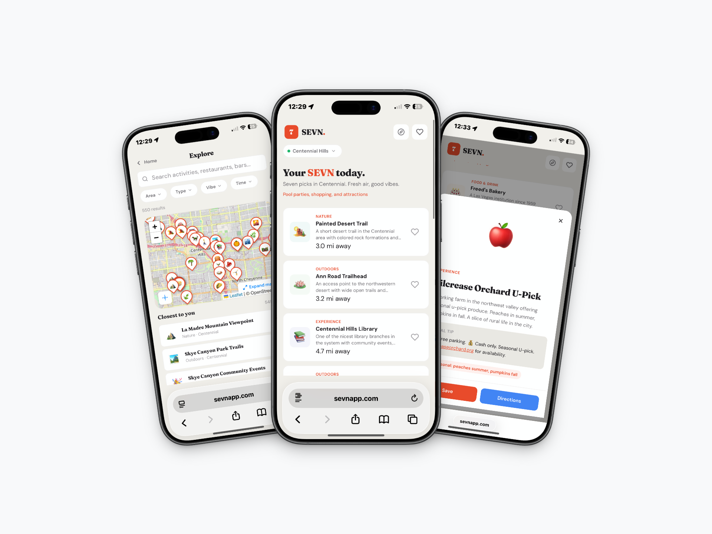
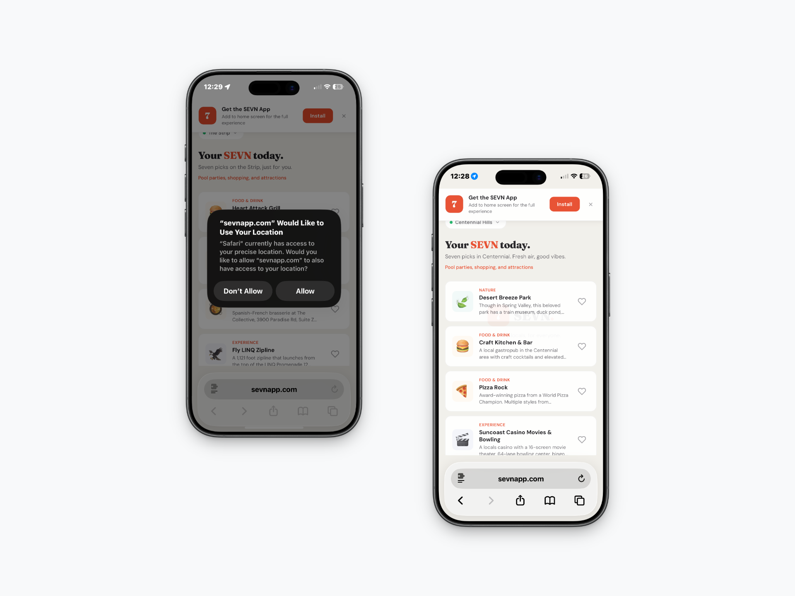
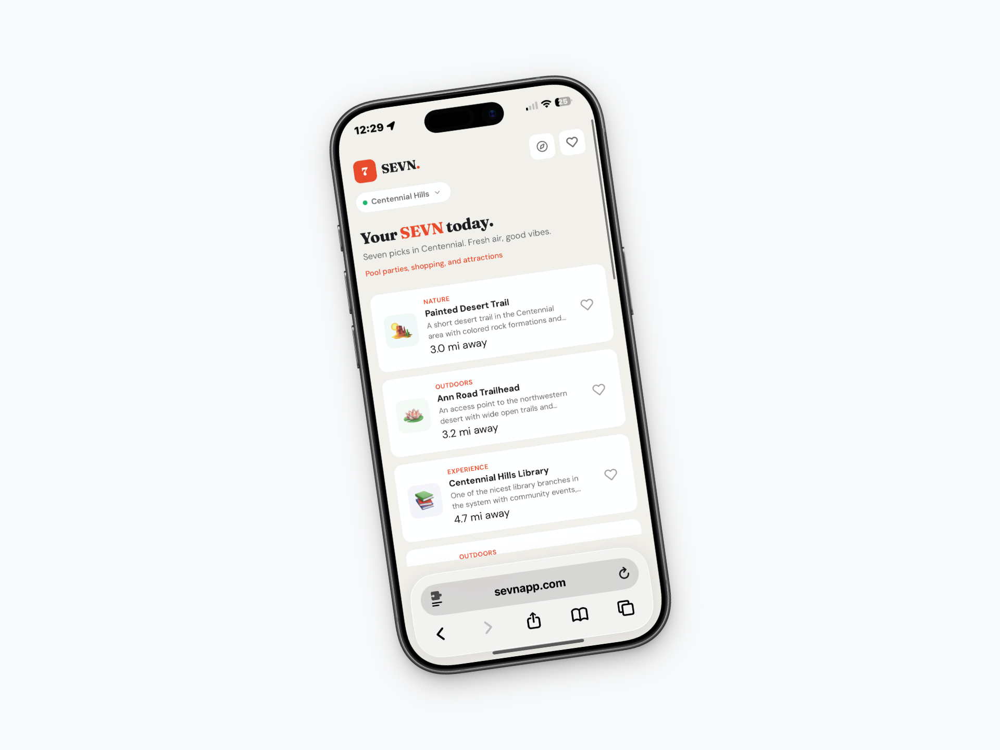

SEVN
A curated guide to Las Vegas beyond the Strip: local picks, organized by neighborhood, zero paid placements.

A local's guide to Vegas, built for everyone.
SEVN is a curated travel guide app for Las Vegas that goes beyond the Strip. Instead of generic top-ten lists and algorithm driven recommendations, SEVN surfaces hand picked locations from locals who know the city: restaurants, bars, coffee shops, outdoor spots and hidden gems organized by neighborhood and category.
I owned the end to end mobile first experience: from the discovery flow and neighborhood exploration to personalized recommendations and category filtering. The goal was to make finding great places in Vegas feel effortless, trustworthy and genuinely local.
Curated locations across Las Vegas: hand picked by locals, not scraped from directories or generated by algorithms
Neighborhoods mapped into distinct exploration zones, giving users a sense of place beyond just the Strip
Sponsored placements: every spot is hand picked by a local, never paid for. Trust was the whole product.
Generic recommendations for a one-of-a-kind city.
Las Vegas attracts over 40 million visitors a year, yet most of them experience the same handful of over-promoted spots. Existing travel apps rely on paid placements and review volume, which means tourists end up at the most marketed restaurants, not the best ones.
Meanwhile, locals who know the city's real gems had no meaningful platform to share that knowledge. The result was a two-sided problem: visitors overwhelmed by generic, ad driven recommendations, and a thriving local scene that remained invisible to the people who would love it most.
Every time friends visit, they ask me where to eat. I always send the same list of spots none of them have ever heard of, and they always text back saying it was the best meal of their trip.
Vegas local, early beta tester interviewOwning the end-to-end discovery experience.
I owned the end to end mobile experience, the discovery flow, neighborhood exploration, category filtering and personalized recommendations, grounded in interviews with both tourists and Las Vegas locals. The whole product rested on one belief: a real person's pick beats an algorithm's ranking.
Two decisions carried the design.
Curation over volume
People do not want to scroll two hundred results. They want five great ones. In testing, users felt more confident choosing from a short curated list than a long algorithm ranked one, because trust came from knowing a real local picked it.
Neighborhood first, for the moment of use
A taco spot means something different Downtown than in Chinatown, so I made the map and neighborhoods the spine of discovery rather than just a category list. And I designed for how people actually use it, one hand, bright sunlight, deciding where to go right now.
What shipped.


Turning local knowledge into a product people trust.
Users decided fast
The neighborhood first flow and category filtering cut time-to-decision dramatically. In usability tests, users went from opening the app to choosing a spot in moments, instead of the minutes of scrolling competing platforms demanded.
Neighborhood exploration drove deeper engagement
Users who started with the neighborhood map explored noticeably more of the city per session than those who searched directly.
High trust signals from day one
App Store reviews consistently mentioned trust and authenticity: users felt confident acting on recommendations because they knew a real local had selected each spot.
Local contributors became advocates
Las Vegas residents who contributed recommendations became the app's most passionate advocates, turning local knowledge into a community driven product.